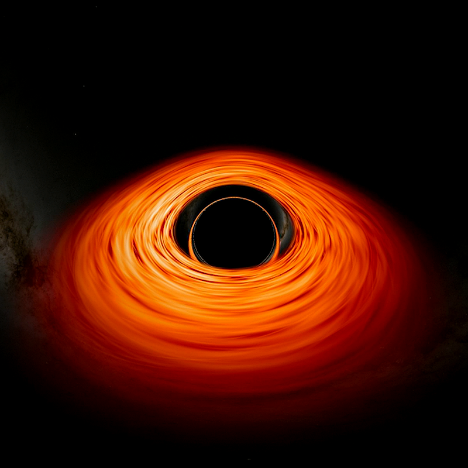

A última já começou.
E uma delas a NASA já treinou para impedir.
Foi o que apagou os dinossauros, há 66 milhões de anos. Em 2022, a NASA desviou um asteroide de propósito pela primeira vez.
Yellowstone já teve 3 supererupções. As cinzas tapariam o Sol, e o planeta esfriaria por anos.
Uma estrela colapsa perto de nós e dispara um jato de radiação. Em segundos, boa parte da camada de ozônio se vai.
Há cientistas que suspeitam que isso já aconteceu.
Ele fica mais brilhante com o tempo. Em cerca de 1 bilhão de anos, a água da Terra evapora. Bem antes de ele virar gigante vermelha.
Ele se expande cada vez mais rápido. As estrelas morrem e param de nascer. Sobra só frio e escuro.
E já começou: hoje nascem bem menos estrelas que no passado.
A vida voltou todas as vezes.

Manda esse post pra ele. Só não manda antes de dormir.